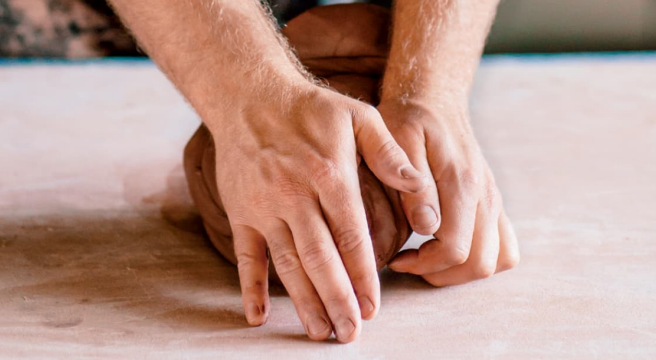
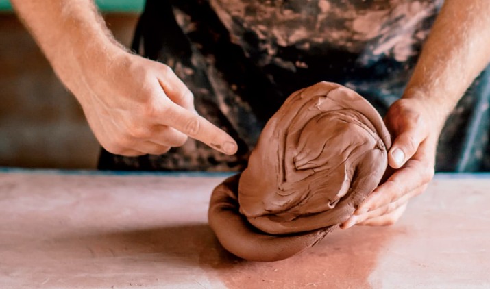
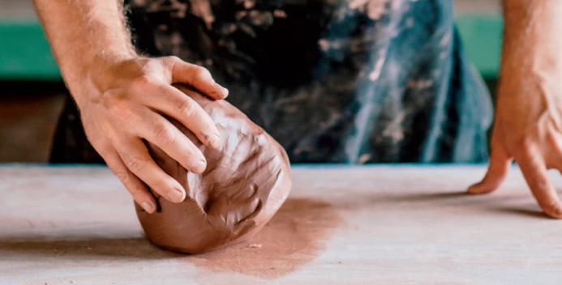
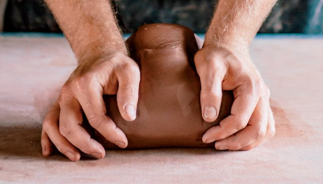
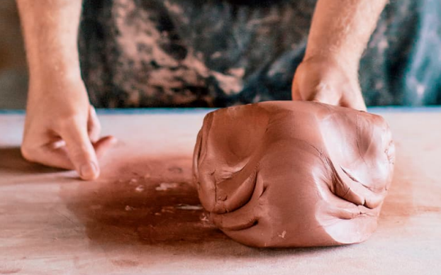
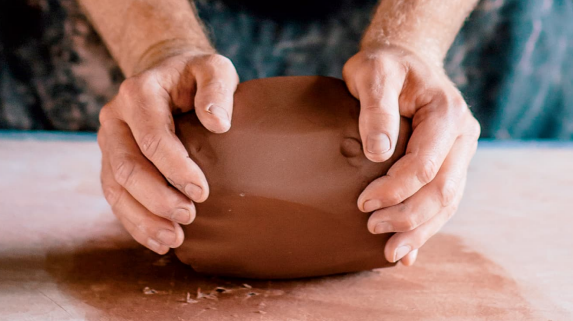

Antes de empezar es necesario que reunas la arcilla necesaria para llevar a cabo la pieza que deseas, el proceso para preparar la arcilla es similar al de amasar masa para pan con la diferencia de que en este caso lo que se busca es quitar todo el aire contenido dentro de la arcilla, para esto es necesario que cuentes con una mesa resistente que soporte la presion que estaras aplicando sobre tu mezcla.
Hay dos tecnicas comunmente usadas para batir la arcilla, ambas son efectivas por lo que puedes usar la que mas te guste para este fin, a continuacion se describen ambas tecnicas.
Coloque sus manos perpendiculares entre sí en un ángulo de 90 grados sobre la superficie de la arcilla.
Con una ligera presión, balancee ambas manos y la arcilla hacia adelante, hacia la superficie de la mesa en un ángulo de 45 grados.
A medida que se acerque a la mesa, sus manos se abrirán ligeramente para que sus dedos no golpeen la mesa.
Balancee hacia atrás en un ligero ángulo para volver a su comienzo posición. Observe que sus manos han girado sobre la arcilla.
Al repetir el movimiento de balanceo, notará que la arcilla comienza a formar un cono con una punta redondeada en un extremo y un remolino cónico en el otro. El movimiento cónico mueve la arcilla desde afuera hacia adentro, y todas las burbujas se eliminarán de la arcilla.
Para terminar el cono, gire la sección ancha con un movimiento circular sobre la superficie de la mesa. Esto redondeará el fondo, eliminando la evidencia de la cónica. El cono ya está listo para la rueda.
Coloque sus manos paralelas entre sí a los lados de su arcilla. Con una ligera presión, muévase hacia adelante en un ángulo de 45 grados. Haga rodar la arcilla hacia usted manteniendo las manos y la arcilla paralelas a la mesa.
Repita el movimiento de balanceo y observe cómo se desarrolla un remolino en ambos extremos de la arcilla, imitando los cuernos curvos de un carnero. Continúe acuñando durante al menos seis repeticiones para asegurarse de que se hayan reventado las burbujas de aire.
Para terminar de acuñar, haga rodar la arcilla más hacia atrás en movimientos sucesivos hacia atrás. movimientos de balanceo. Esto volverá a meter las alas más pequeñas de arcilla en el centro, dando como resultado un cilindro alargado de arcilla. Usando ambas manos, golpea los extremos hacia abajo, creando una bola. La arcilla ya está lista para la rueda.
